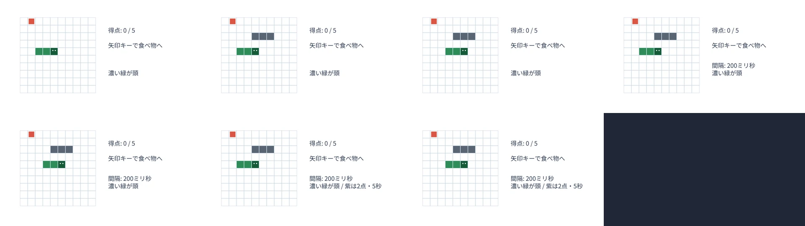
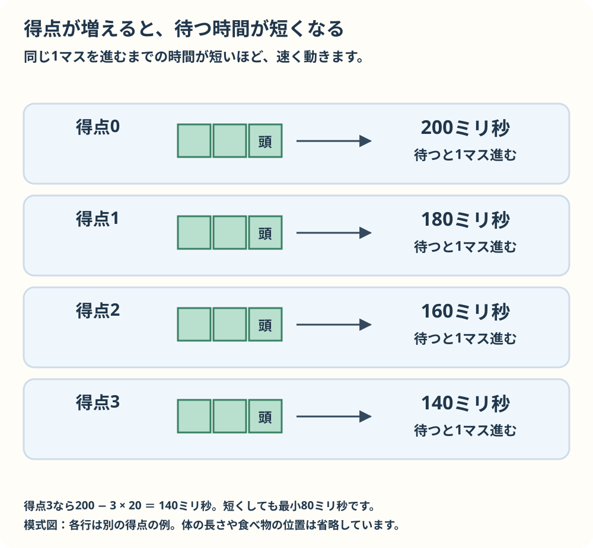

スネークゲームの発展
基本の完成版から3つの機能を順番に追加します。
始める前に
基本編の完成版から始めます。ZIPを展開してできたフォルダーでindex.htmlを開きます。ZIPには基本編の3ファイルが入っています。
WindowsでZIPを展開する（動画）
自分で作った基本版でも同じ内容なら使えます。
各段階の変更を上から順に作業用の script.js に加えます。変更前と同じ範囲を探して、変更後のコードに置き換えてください。保存したら index.html を開くか、再読み込みします。
ステップ 1：障害物を置く
このステップの見本を図で見る

このステップの見本
この行を足す前 変わったコードの一例（script.js）
const obstacles = [{x: 4, y: 2}, {x: 5, y: 2}, {x: 6, y: 2}];
見本で確かめること
灰色の3マスに当たると終了し、Rで再開できます。
目標
障害物に当たると終了し、食べ物は障害物に出ないようにします。
確認欄までは準備中です。作業を順に進め、確認欄で保存して動作を確かめます。
書く場所と置き換えるコード
障害物を用意する
作業用フォルダーの script.js で、次の目印を探し、その直後に書きます。
目印
const cell = 30, boardX = 80, boardY = 70;
書き足すコード
const obstacles = [{x: 4, y: 2}, {x: 5, y: 2}, {x: 6, y: 2}];
3つの障害物のマスを配列に入れます。
障害物に当たったら終了する
作業用フォルダーの script.js で、次の目印を探し、その直後に書きます。
目印
if (head.x < 0 || head.x > 9 || head.y < 0 || head.y > 9) {
書き足すコード
state = "over";
return;
}
if (obstacles.some(part => part.x === head.x && part.y === head.y)) {
some() で新しい頭と同じ位置の障害物があるかを調べます。
障害物を描く
作業用フォルダーの script.js で、次の目印を探し、その直後に書きます。
目印
ctx.strokeRect(boardX + col * cell, boardY + row * cell, cell, cell);
}
書き足すコード
}
ctx.fillStyle = "#5a6573";
for (const block of obstacles) {
ctx.fillRect(boardX + block.x * cell + 1, boardY + block.y * cell + 1, cell - 2, cell - 2);
障害物の位置を順に取り出し、灰色のマスを描きます。
障害物を食べ物の候補から除く
作業用フォルダーの script.js で、次の範囲を探して置き換えます。
置き換える範囲
let occupied = false;
置き換えるコード
let occupied = obstacles.some(block => block.x === col && block.y === row);
空きマスを探すとき、障害物の位置も使用中とします。
保存後の確かめ方
保存してゲーム画面を更新する（動画）
index.html を再読み込みします。灰色の3マスに当たると終了し、Rで再開できます。 この段階の見本を開く
小さな練習
障害物の位置を変え、初期のヘビと重ならないことを確かめます。 練習後はコードを元に戻してください。
ステップ 2：得点で速くする
このステップの見本を図で見る
このステップの見本
if (performance.now() - lastMove < 200) return;
変わったコードの一例（script.js）const interval = Math.max(80, 200 - score * 20);
見本で確かめること
得点が増えると間隔の表示が小さくなり、動きが速くなります。
目標
食べ物を取ると、移動の間隔が短くなります。
確認欄までは準備中です。作業を順に進め、確認欄で保存して動作を確かめます。
書く場所と置き換えるコード
得点に応じて移動を速くする
作業用フォルダーの script.js で、次の範囲を探して置き換えます。
置き換える範囲
if (performance.now() - lastMove < 200) return;
置き換えるコード
const interval = Math.max(80, 200 - score * 20);
if (performance.now() - lastMove < interval) return;
間隔は 200 - score * 20 ミリ秒で、Math.max() により80未満にしません。得点2なら160ミリ秒です。
現在の間隔を表示する
作業用フォルダーの script.js で、次の目印を探し、その直後に書きます。
目印
ctx.fillText("得点: " + score + " / 5", 430, 130);
書き足すコード
ctx.fillText("間隔: " + Math.max(80, 200 - score * 20) + "ミリ秒", 430, 270);
移動に使う式と同じ値を画面に表示します。

同じ1マスを進むまでの待ち時間が短いほど、スネークは速く動きます。得点0なら200ミリ秒、得点1なら180、得点2なら160、得点3なら140です。短くしても、移動間隔は80ミリ秒より小さくしません。
各行は別の得点の例です。体の長さや食べ物の位置は省略し、移動間隔だけを比較しています。
保存後の確かめ方
得点が増えると間隔の表示が小さくなり、動きが速くなります。 この段階の見本を開く
小さな練習
20を10に変え、速くなるペースを比べます。 練習後はコードを元に戻してください。
ステップ 3：時間限定のボーナス
このステップの見本を図で見る
このステップの見本
score++;
変わったコードの一例（script.js）score += bonusEaten ? 2 : 1;
見本で確かめること
得点2で紫の食べ物が現れ、5秒後に消えます。
目標
得点2以上で、5秒だけ取れるボーナスが出ます。
確認欄までは準備中です。作業を順に進め、確認欄で保存して動作を確かめます。
書く場所と置き換えるコード
ボーナスを覚える
作業用フォルダーの script.js で、次の範囲を探して置き換えます。
置き換える範囲
let snake, direction, nextDirection, lastMove, food, score, state;置き換えるコード
let snake, direction, nextDirection, lastMove, food, score, state, bonus, bonusUntil;bonus はボーナスの位置、bonusUntil は表示が終わる時刻です。
空きマスにボーナスを置く準備をする
作業用フォルダーの script.js で、次の目印を探し、その直前に書きます。
目印
function placeFood()書き足すコード
function placeBonus() {
}
placeBonus() に候補を探す処理を書きます。
ボーナスの候補を探す
作業用フォルダーの script.js で、次の目印を探し、その直後に書きます。
目印
function placeBonus() {
書き足すコード
const empty = [];
for (let row = 0; row < 10; row++) {
for (let col = 0; col < 10; col++) {
const blocked = obstacles.some(block => block.x === col && block.y === row);
const body = snake.some(part => part.x === col && part.y === row);
const normal = food.x === col && food.y === row;
if (!blocked && !body && !normal) empty.push({x: col, y: row});
}
}
障害物、ヘビ、通常の食べ物と重ならないマスを候補に入れます。
ボーナスの位置と期限を決める
作業用フォルダーの script.js で、次の目印を探し、その直後に書きます。
目印
const empty = [];
for (let row = 0; row < 10; row++) {
for (let col = 0; col < 10; col++) {
const blocked = obstacles.some(block => block.x === col && block.y === row);
const body = snake.some(part => part.x === col && part.y === row);
const normal = food.x === col && food.y === row;
if (!blocked && !body && !normal) empty.push({x: col, y: row});
}
}
書き足すコード
if (empty.length > 0) {
bonus = empty[Math.floor(Math.random() * empty.length)];
bonusUntil = performance.now() + 5000;
}
候補があればランダムに1つ選び、現在時刻から5000ミリ秒後を期限にします。
最初はボーナスを置かない
作業用フォルダーの script.js で、次の目印を探し、その直後に書きます。
目印
state = "playing";
書き足すコード
bonus = null;
bonusUntil = 0;
開始時は null と時刻0に戻します。
期限が来たら消す
作業用フォルダーの script.js で、次の目印を探し、その直後に書きます。
目印
if (state !== "playing") return;
書き足すコード
if (bonus && performance.now() >= bonusUntil) bonus = null;
ボーナスがあり期限以上なら null にします。
通常とボーナスを区別する
作業用フォルダーの script.js で、次の範囲を探して置き換えます。
置き換える範囲
const eating = head.x === food.x && head.y === food.y;
置き換えるコード
const normal = head.x === food.x && head.y === food.y;
const bonusEaten = bonus !== null && head.x === bonus.x && head.y === bonus.y;
const eating = normal || bonusEaten;
新しい頭が通常の食べ物、ボーナスのどちらと一致するかを調べ、どちらかなら食べた状態にします。
食べた種類で得点を変える
作業用フォルダーの script.js で、次の範囲を探して置き換えます。
置き換える範囲
score++;
置き換えるコード
score += bonusEaten ? 2 : 1;
if (bonusEaten) bonus = null;
ボーナスなら2点、通常なら1点を加え、食べたボーナスを消します。
次の食べ物とボーナスを置く
作業用フォルダーの script.js で、次の範囲を探して置き換えます。
置き換える範囲
placeFood();
置き換えるコード
if (normal) placeFood();
if (score >= 2 && bonus === null) placeBonus();
通常の食べ物を食べたら作り直し、得点2以上でボーナスがなければ置きます。
ボーナスを描く
作業用フォルダーの script.js で、次の目印を探し、その直後に書きます。
目印
ctx.fillRect(boardX + food.x * cell + 4, boardY + food.y * cell + 4, cell - 8, cell - 8);
}
書き足すコード
if (bonus) {
ctx.fillStyle = "#a443ac";
ctx.fillRect(boardX + bonus.x * cell + 4, boardY + bonus.y * cell + 4, cell - 8, cell - 8);
}
ボーナスがあれば紫の四角で描きます。
ボーナスの案内を表示する
作業用フォルダーの script.js で、次の範囲を探して置き換えます。
置き換える範囲
ctx.fillText("濃い緑が頭", 430, 300);
置き換えるコード
ctx.fillText("濃い緑が頭 / 紫は2点・5秒", 430, 300);
紫の食べ物が2点で5秒間出ることを表示します。
通常の食べ物と重ならないようにする
作業用フォルダーの script.js で、次の目印を探し、その直後に書きます。
目印
let occupied = obstacles.some(block => block.x === col && block.y === row);
書き足すコード
if (bonus && bonus.x === col && bonus.y === row) occupied = true;
通常の食べ物の候補からボーナスの位置を除きます。
保存後の確かめ方
得点2で紫の食べ物が現れ、5秒後に消えます。取れたときは2点増えます。 この段階の見本を開く
小さな練習
5000を3000に変え、取れる時間を比べます。 練習後はコードを元に戻してください。